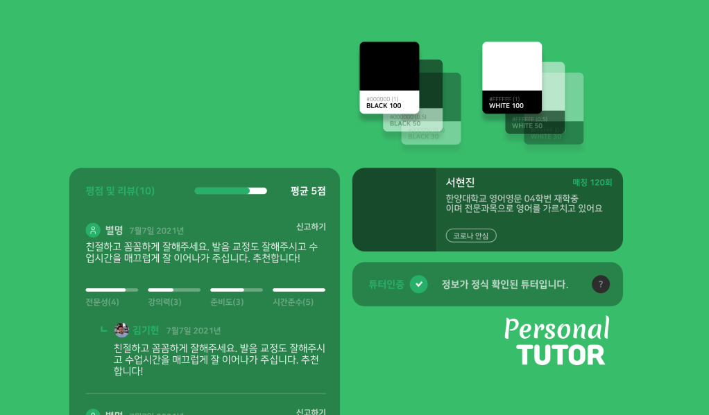

기존 퍼스널튜터 프로젝트의 고도화 및 실제 개발 프로젝트로써 기존에 했던 앱을 기반으로 하여, 전혀 다른 서비스 구축으로 설계되었다. 초기 작업 요청을 받았을 때 기획 문서 및 화면설계서가 없었으며 최초 직접 모든 화면구성과 기획을 진행하여 화면제작에 들어갔으며 이를 토대로 해당 업체가 필요한 부분을 수정해가며 다듬어가는 형태로 진행되었다.
퍼스널튜터는 과외선생님 매칭 플랫폼으로 써 메인서비스인 매칭 서비스와, 일반적인 학생이 학습에 도움을 받을 수 있는 질문 등록 서비스, 기타 익명게시판, 비대면 화면공유 학습 서비스, 등을 이루고 있다.
초기 확정된 요청사항으로는 굉장히 어두운 화면의 테마를 요청받았으며, 본 서비스를 벤치마킹할 수 있는 사용자가 가장 많은 서비스 하나를 소개 받았으며 이를 토대로 뼈대 작업을 비슷하게 우선 진행해달라고 전달 받았다. 벤치마킹을 한다고 하지만 서비스의 성격과 브랜딩을 위해서 각 서비스의 장점과 단점, 사용자가 느끼게 될 브랜드적 이미지에 대해 고민하였다.
학습매칭 서비스로써 신뢰도가 높은 화면을 구성해야 했으며 이에 따라 베이직한 구성과 올바른 정렬을 통해 진행하였다.
각 큰 덩어리의 서비스를 우선 분류하였으며 플로우에 따라 화면작업을 이어나갔다.
학생과 교사용 2개의 각기 다른 화면진입이 있었음으로 2가지 플로우로 동시 진행하였다.
디자인적 기획으로는 전체적인 구성과 기획을 직접 할 수 있었음으로 전부터 해보고 싶었던 단컬러를 중점으로 opacity만을 사용하여 단계별로 사용될 수 있는 컬러 구조를 적용하고 싶었다. 또한 전체적인 기초 디자인시스템 또한 이번 과정에서 함께 진행해보도록 하였다.
화면 레이아웃으로는 사용자에게 보여줄 정보와 단락이 매우 많은것으로 판단하여 각 아이템별로 카드형태로 분류하여 인지할 수 있도록 구성하였다.
그리고 팝업 및 페널 메뉴의 경우는 본 테마가 극 다크모드의 형태를 띄우고 있기에 상위에 올라갔을 경우 시인성이 떨어져
화면위에 플로팅되는 영역의 경우 흰색의 배경화면을 사용하였다. 이에 대비되도록 기존 opacity를 사용한 단컬러의 퍼센티지를 대비색도 동일하게 가도록 진행하였다.
이전부터 opacity를 사용하여 한가지 컬러를 다양화하여 사용하는 디자인 시스템을 해보고 싶었다. 본 프로젝트에서는 오히려 개발자가 개발적으로 opacity를 주는것이 번거롭다하여 결국 색상값을 전달하였는데. 본 컬러의 정의가 미리 이루어지고 그것을 사용하여 개발자가 입력하는 방식으로 진행된다면 가능하다고 판단된다. 나머지 블럭박스의 투명도같은 경우도 한가지의 컬러배색을 사용하여 다양하게 사용하기를 바랬는데, 기존 이미지를 사용하는방식을 고수하여 투명도가 적용된 이미지를 전달하게 되었다. 본 프로젝트에서는 결과적으로 개발자와의 커뮤니케이션적으로 알맞지 않았다고 판단되어지나 투명도를 활용한 디자인 시스템을 적용하여 진행했던것이 개인적으로 성취감을 느낄 수 있었다.
컬러의 경우 포인트 컬러를 학습과 신뢰도를 가장 준다고 느낄 수 있게 그린계열의 색상을 사용하였다. 그외에 모든 베이직 컬러들은 다크색상 #000000 블랙을 기준으로 70% 50% 30% 만 사용하도록 하였다. 대비 폰트컬러도 동일하게 #FFFFFF 화이트 기준으로 동일하게 70% 50% 30%을 유지하도록한다. 또한 페널 대비 컬러 영역은 이를 반대로 진행한다.
베이직하고 다양한 시스템 디바이스에 적합하도록 간결한 NanumSquare 폰트를 사용하였으며, 폰트의 크기를 최소화하여 사용하였다. 대신 기존 컬러 정의를 사용하여 각 텍스트의 성격 및 우선순위가 있을경우 동일하게 opacity를 조절하여 표현하였다.
*프로젝트를 마무리하고 체크를 해보니 행간의 간격이 너무 좁아 시인성이 떨어진다. 기본값 100%로 진행하였는데, 타사 어플리케이션과 서비스들을 체크해본 결과 현재 값에서 +30%인 130% 행간으로 사용하는것이 읽기 더 편안하다고 판단된다. 다음 프로젝트부터는 행간의 간격을 최소 130%로 유지하도록 한다.
아이콘은 모두 드로잉 되었으며 stroke 값 1.3을 유지한다. 이외 기준규격이 있는 소셜 SNS아이콘의 경우는 본사 디자인 가이드 방침을 준수하도록 초기 진행하였다가 해당 컬러가 앱 서비스에 끼치는 시각적 영향이 큰것으로 판단하여 조정하였다.
베이스적 디자인 시스템으로는 모든 블럭의 형태 (corner radius 15px)를 유지하며, 내용에 따라 가변길이로 사용가능하도록 하였다. 그리고 블럭의 특성에 따라 시각적 우선순위가 바뀌면 폰트와 마찬가지로 opacity를 사용하여 차이를 두었다.
기본 베이직 박스의 opacity는 30%이며 기본 베이스 배경으로 인해 좀더 진한 결과를 얻을 수 있다. opacity로 적용하는
어플리케이션 디자인은 명도에 따라 시인성 문제가 있을 수 있음으로 실제 디바이스 삼성페널,LG페널 측정을 통해 진행되었다. 데스크탑 모니터와 모바일 디바이스의 명도차이가 심하며, 실제 유저가 보게될 디바이스 페널로 체크하는것이 올바르다고 판단되었기 때문이다. 고로 데스크탑으로 볼때보다 모바일 디바이스에서 볼때 좀더 명도가 있는 결과물을 느낄 수 있었다.
컨텐츠박스와 다르게 input박스의 경우 컨텐츠와 성격이 다름으로 라인처리 및 라운드를 강하게 넣었는데 이때 라운드값은
변형하지 않으면서 기존 15값을 유지하며 입력박스의 세로값을 조절함으로써 좀더 대비되는 곡선값을 느낄 수 있게 한다.
샘플 이미지의 경우 본 서비스의 브랜드적 이미지를 가장 잘 느끼게 해줄 수 있는 이미지를 선정하여 unsplash에서 가져오도록 하였다.(임시적으로라도 상업적으로 사용 가능하도록) 해당 이미지가 추후 서비스의 대표브랜드 이미지로 사용하지는 않겠지만 추후 반영할 것을 염두하여 삽입하였다.
메인콘텐츠 및 메인뷰로써 서비스의 이미지를 부각할 수 있는 서비스 이미지가 커버로 상단에 위치하고 있으며, 이 레이아웃을 컨텐츠 상세에서도 동일하게 사용하여 일체감을 주려하였다. *상세에 들어가는 내용이 굉장히 많은 형태로 초기 요구를 받아 이를 영역별 나누는 레이아웃을 적용하였다가. 제작 공수가 많이 들어가는 등 내부사정으로 자연어 입력형태로 향후 변경 되었다.